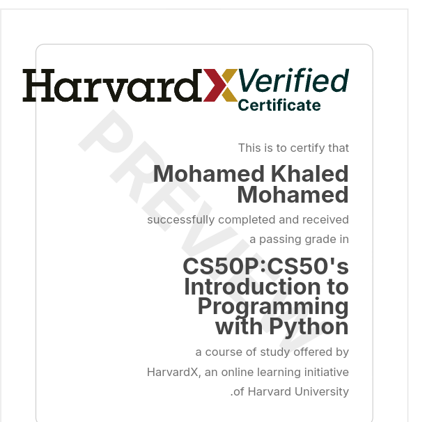

I don't just write code—I study systems. From memory management to distributed architectures, from bare-metal logic to neural networks. If it computes, I'm interested.
[SYSTEM] role="Technology Generalist" curiosity_level=MAX_INT specialization="undefined" [DOMAINS] 1. Systems Programming 2. Machine Learning 3. Embedded Systems 4. Distributed Computing 5. Whatever's Next # Currently exploring: Rust & OS internals
I started with web development, but the web was just the entry point. What fascinates me now is the entire stack—from electrons flowing through transistors to packets routing across continents. I want to understand the machine at every level of abstraction.
I'm not married to any single language or framework. Today it might be Node.js, tomorrow it might be Rust, next week I'm reading about transformer architectures in ML papers, and on weekends I'm probably breaking my Linux install trying to compile a custom kernel.
Technology is a frontier, and I'm here to explore it all. Whether it's optimizing algorithms, architecting distributed systems, training models, or just writing a shell script that saves me 5 minutes—if it involves solving problems with technology, count me in.
C, memory management, and understanding what actually happens when you malloc().
Systems that scale, fail gracefully, and communicate across the wire.
Not just calling APIs. Understanding gradients, tensors, and model architectures.
If I do it twice, I script it. Linux, bash, and the art of laziness.
Tools are temporary. Concepts are permanent. But here are my current weapons of choice.
Formal education is just the baseline. These are the checkpoints on my self-directed journey through computer science.
Harvard's Introduction to Computer Science - The foundation of how computers actually work.
Because GUI is a suggestion, not a requirement. System-level mastery.

From scripting to data structures. The swiss army knife of languages.
Asynchronous programming and event-driven architecture.
Algorithms, data structures, and computational thinking.
Note: These represent formal coursework completed, but my real education happens in the terminal at 2 AM, in obscure GitHub repositories, and through breaking things until I understand them. Currently pursuing deeper knowledge in systems programming and machine learning architectures.
Want to discuss kernel panics, neural network architectures, or why tabs are objectively superior to spaces?
My inbox is open for any technical deep-dive.